From a collected price to the published index: a walkthrough
This guide follows one month of prices through the system, screen by screen: which button to press, who presses it, and what to do when a price is wrong at each step. The screenshots are from the Uganda system (June 2026, Arua), taken on a copy of the database so that nothing real was changed.
COLLECTION VALIDATION (one per centre and month) INDEX
───────────────────────────────────── ─────────────────────────────────────────────── ─────────────────
1 Create 2 Approve 3 Collect 5 Validate 6 Review 7 Validate 8 Impute 11 Compute the
question- (Draft → prices (checks) flagged Inliers 9 Finalize index
naires Price 4 Submit prices 10 Promote 12 Check the
Survey) & check dashboards
| Who | Does |
|---|---|
| Supervisor | creates and assigns questionnaires, approves them, checks submitted prices, sends them back or on to validation |
| Collector | prices the items (mobile app or web), submits |
| Senior statistician | runs the validation, accepts / rejects flagged prices, imputes, finalizes, promotes, computes the index |
Part 1 · Collection (the questionnaire)
A questionnaire is one outlet's list of items for one month. It moves through Draft → Price Survey → Standardization → Validation → Done; the bar at the top right of the questionnaire always shows where it is.
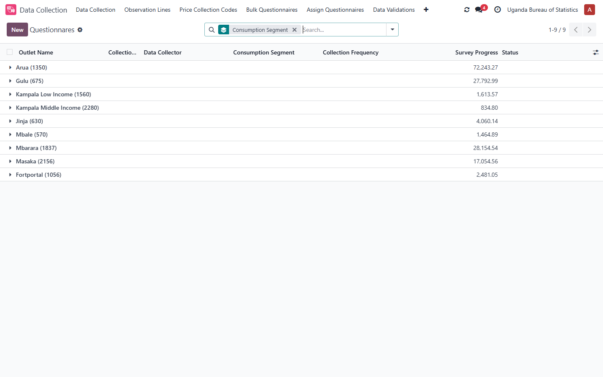
Step 1 · Create the month's questionnaires (supervisor)
Data Collection → Bulk Questionnaires. Choose the consumption segment (centre) and the collection date, then Create Questionnaires. One questionnaire is made per outlet, with a line for every active item of that outlet. Items priced twice a month get their own questionnaire.
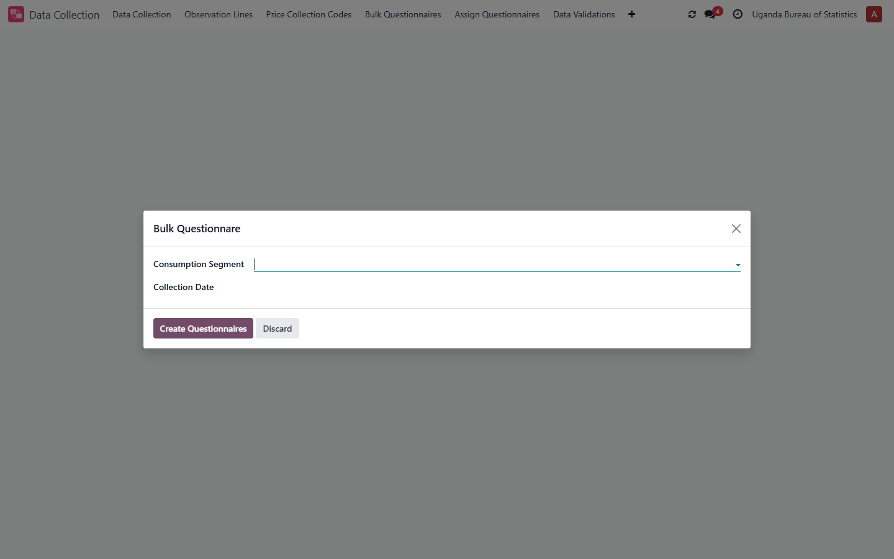
Then Data Collection → Assign Questionnaires to give them a data collector and a supervisor.
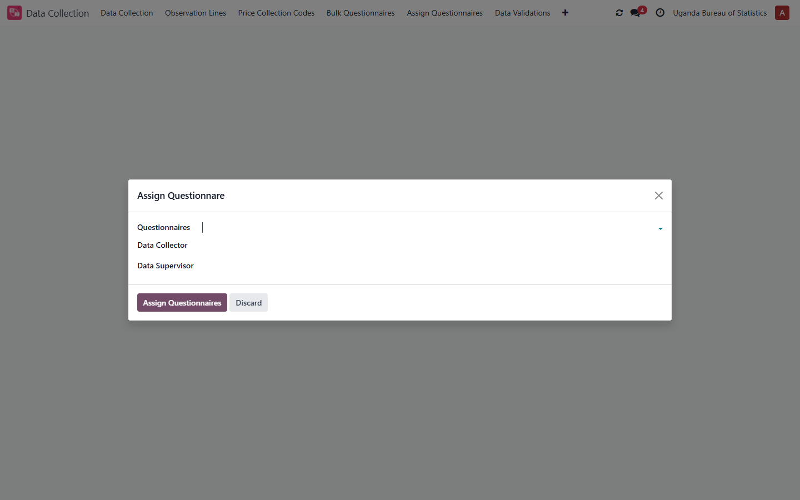
Kenya, Tanzania and Zanzibar have their own versions of these two screens (by zone, region or collection centre); the steps are the same.
Step 2 · Approve (supervisor) · Draft → Price Survey
Open the questionnaire and press Approve. It needs a collector and a supervisor. The questionnaire now appears on the collector's phone. (Cancel is also here, for a questionnaire that should not be collected.)
Many at once: in the questionnaire list, filter To approve (draft), tick the questionnaires (or the box at the top for all) and press Approve selected.
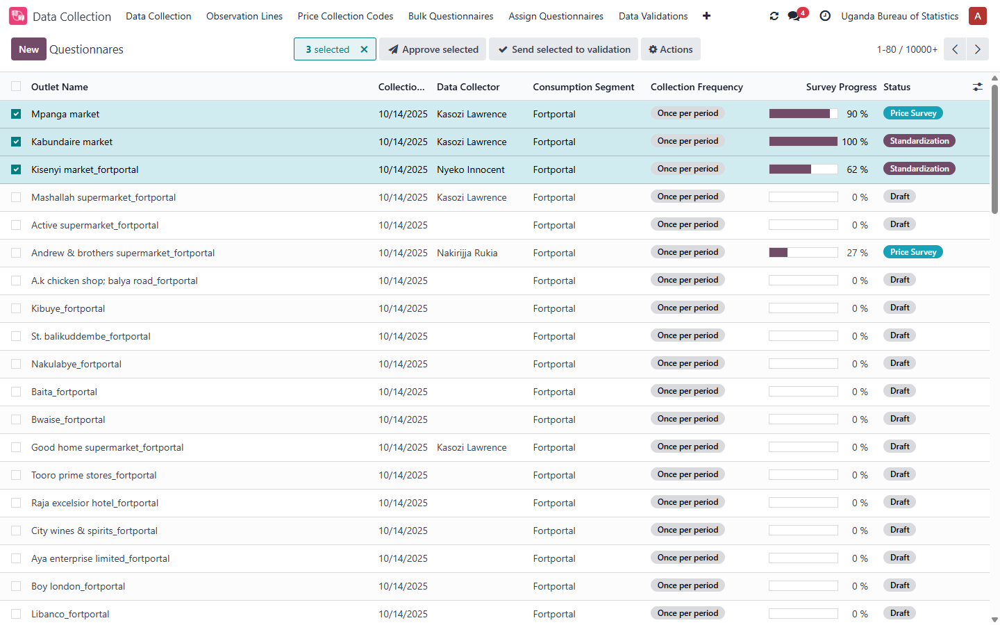
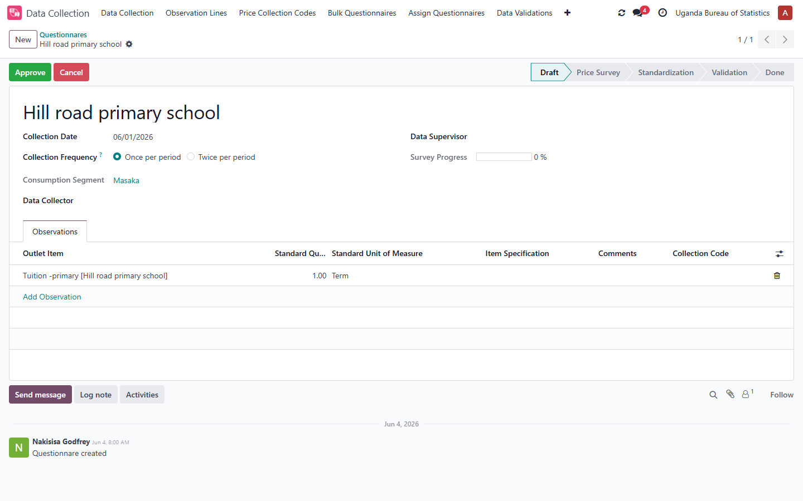
Step 3 · Collect the prices (collector) · Price Survey
On the phone (or on the web, in the questionnaire's lines), each item gets a price, the quantity and unit it was priced for, and a collection code when there is no price (T temporarily missing, P permanently missing) or something to explain (season, rise / drop confirmed). Items priced twice a month get one price per visit.
Wrong price at this step? The system checks each price as it is typed: the Range Check badge compares it with the outlet's last price (± 30%) and shows In range, Above range or Below range. It never blocks: if the price is right, keep it and add a remark; if not, correct it there and then.
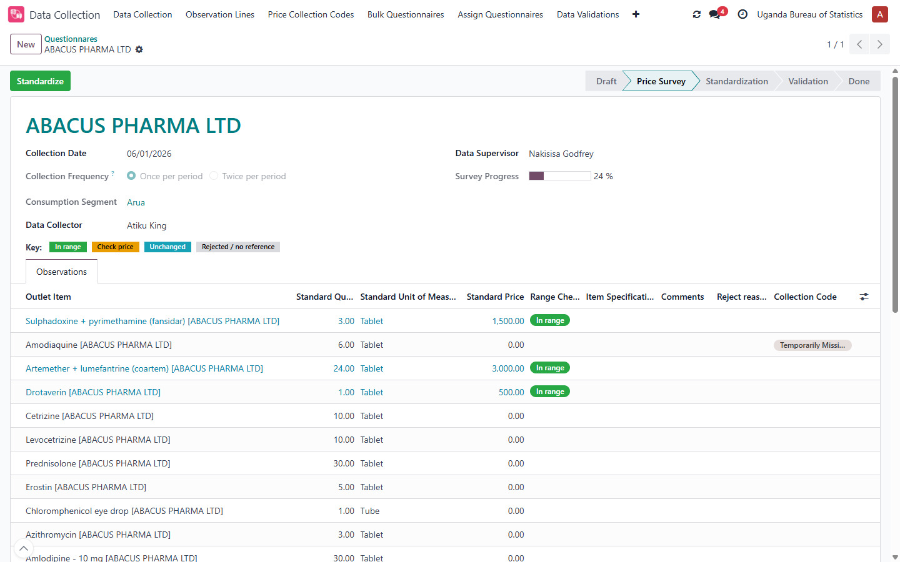
Inside a line you see each visit's price, the price converted to the standard quantity, and the expected range:
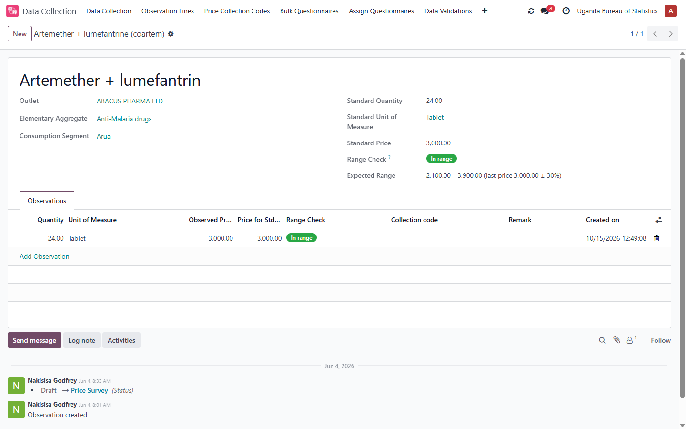
Step 4 · Submit, then check (collector → supervisor) · Price Survey → Standardization
- The collector submits (on the web: Submit for checking).
- The questionnaire then shows a yellow banner, Waiting for the supervisor. The supervisor's list filter for these is Waiting to be checked.
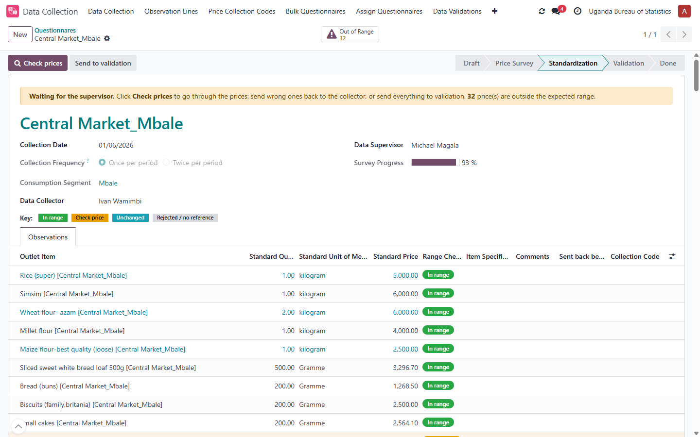
The supervisor presses Check prices. One screen shows every price next to the last price, the change and the range check, problems first:
- prices outside the expected range are already ticked to be sent back;
- items with neither a price nor a code are ticked too (they were not collected);
- everything else is unticked.
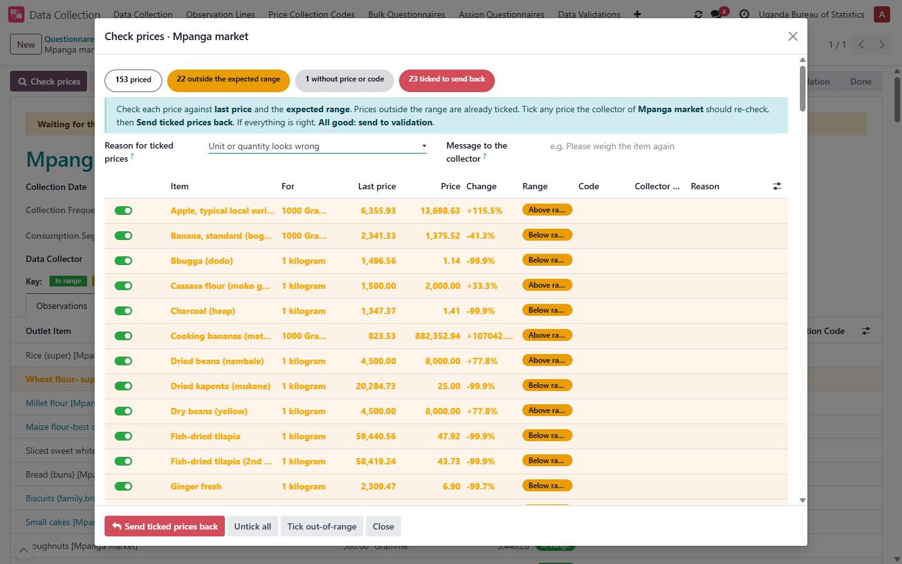
Then:
| You decide | Press | What happens |
|---|---|---|
| Some prices are wrong | adjust the ticks, pick a reason (e.g. Unit or quantity looks wrong; a line can have its own), optionally a message, then Send ticked prices back | the questionnaire goes back to the collector (Price Survey) with a red banner listing what to re-check; the lines are marked in red with their reason, and the collector's phone shows the same summary |
| Everything is right | untick (or Untick all), then All good: send to validation | the prices go to this centre's Data Validation for the month |
In the example (Fort Portal, October 2026) the screen shows 22 prices outside the range at once, e.g. charcoal at 1.41 against 1,347 last time: clearly a unit error to send back before it reaches validation.
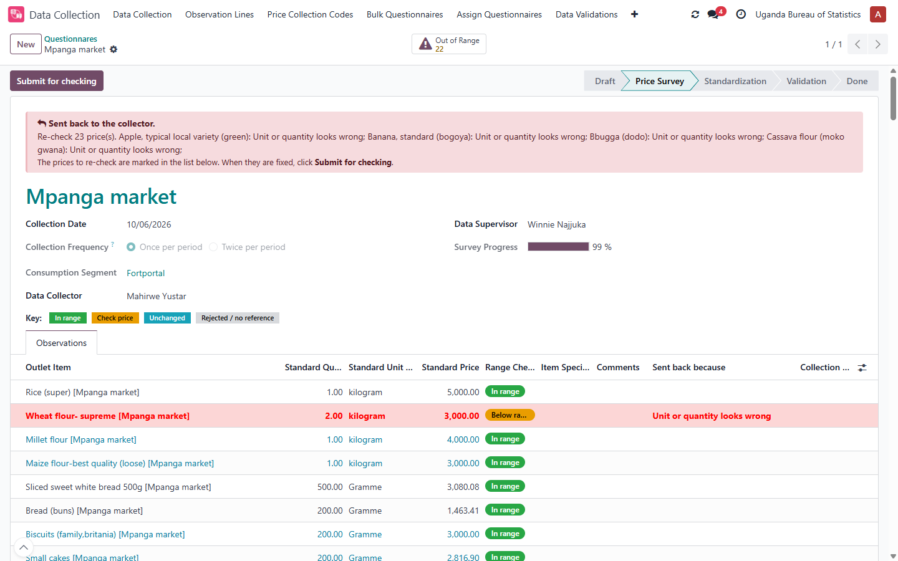
Shortcuts: Send to validation on the questionnaire skips the check screen; in the list, Send selected to validation does it for many questionnaires at once. Already sent by mistake? While the validation is still in Draft, Take back from validation brings the questionnaire back.
Kenya has an extra Review step before standardization; there Check prices works the same, and All good approves the questionnaire for standardization.
Part 2 · Validation (one per centre and month)
Data Collection → Data Validations. All submitted questionnaires of a centre and month land in one validation (e.g. Arua/June/2026). It has four steps, shown in the bar at the top right and explained in the blue banner, which always says what to do next. Only the next button is highlighted.
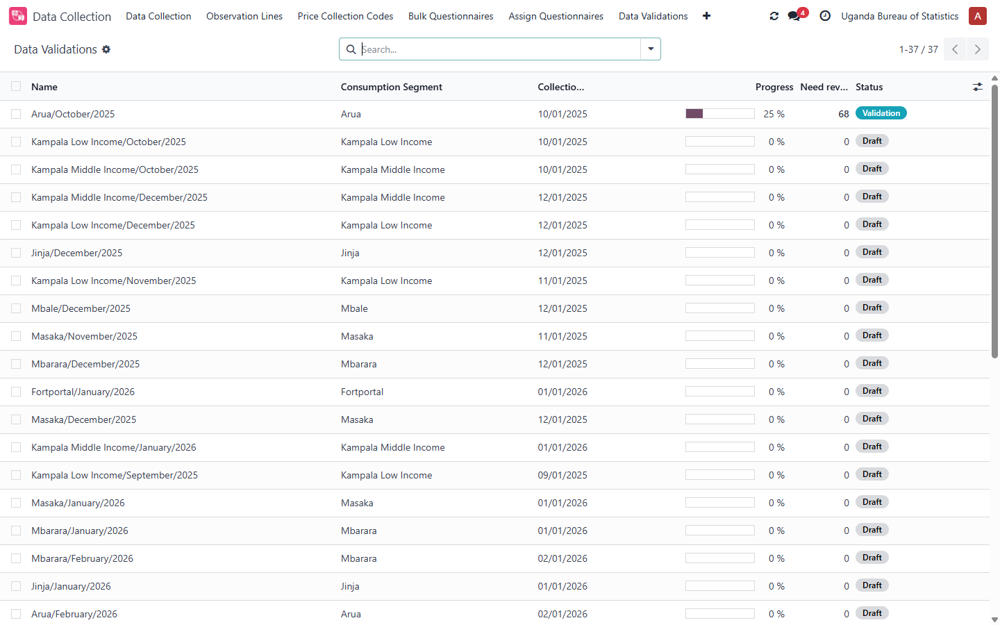
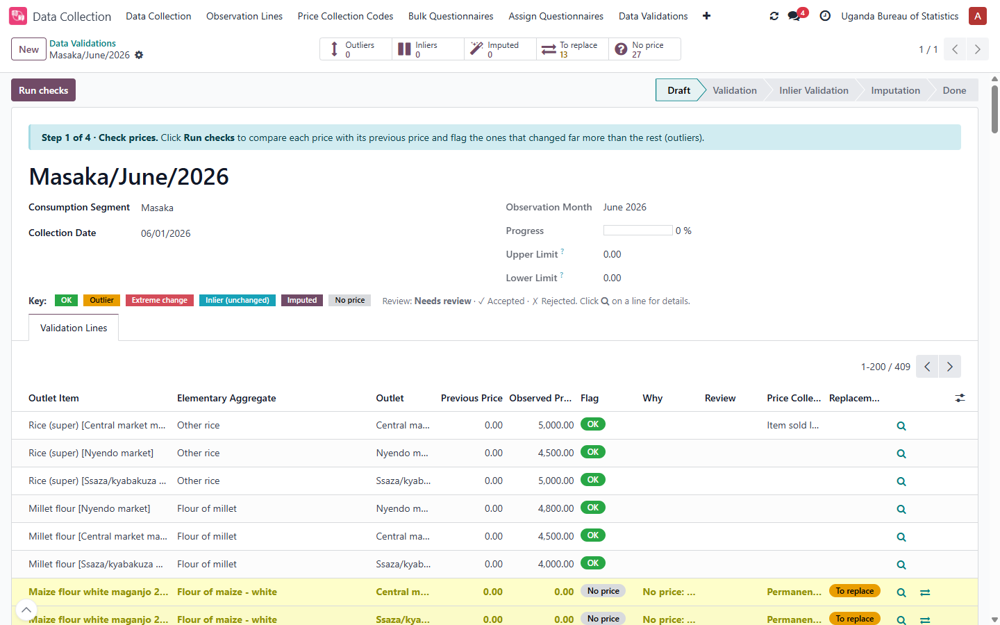
Every price gets one flag, with the reason in words (column Why):
| Flag | Meaning |
|---|---|
| OK | normal price change |
| Outlier | change outside the limits worked out from this month's changes |
| Extreme change | among the very largest / smallest changes this month |
| Inlier | exactly the same price 12 months in a row (was it really collected?) |
| Imputed | no usable price; filled in from similar items |
| No price | missing, temporarily missing, or rejected (will be imputed) |
Step 5 · Run checks (statistician) · Draft → Validation (step 1 of 4)
Press Run checks. The system computes each price's change against last month and flags outliers and extreme changes.
Step 6 · Review the flagged prices (step 2 of 4)
The banner says how many need a decision. Press Review flagged prices: a list of just those prices.
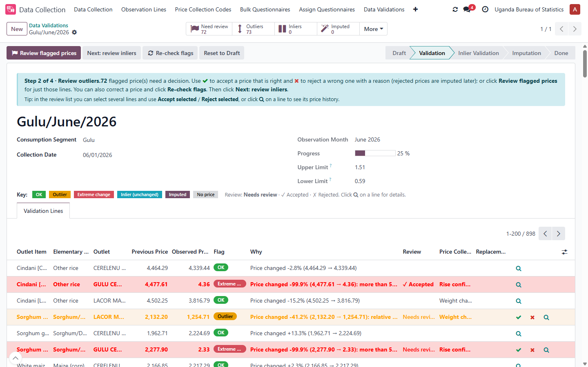
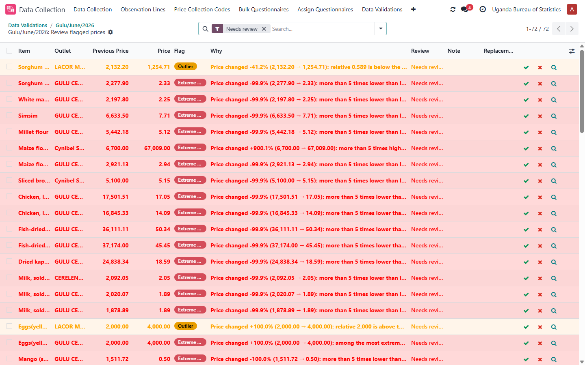
Every flagged row has two buttons: a green ✓ (accept) and a red ✗ (reject). ✓ takes one click; ✗ opens a short dialog with a reason already picked (Unit or quantity error, Typing error, Wrong item, Not really collected…). The magnifier 🔍 shows the details and the last 12 months of prices.
| Decision | When | What happens |
|---|---|---|
| Accept price | the price is right (e.g. a real price rise) | it is used as collected |
| Reject price | the price is wrong (typing or unit error) | a note is required; the collected price is kept on file, and the line is treated as missing and imputed in step 8 |
| type the correct price, then Re-check flags | you know the right value (an obvious typing error) | the change is written in the note automatically and the flags are re-computed |
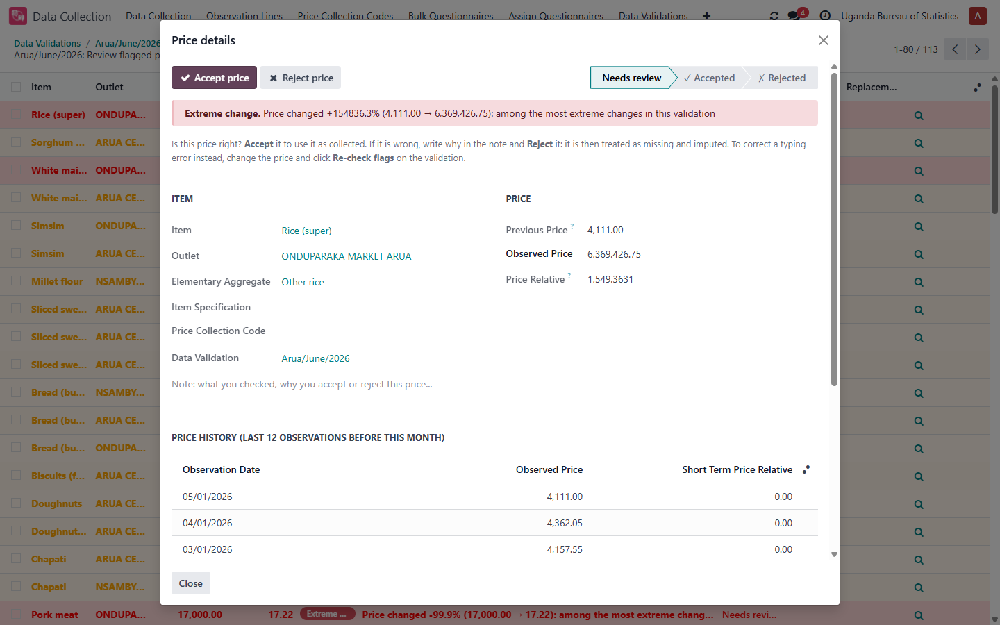
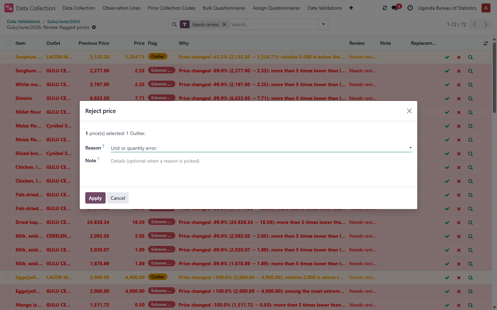
Many lines? In the list, filter or group them, tick the box at the top to select all, then Accept selected / Reject selected. Every decision records who and when, and can be undone with Undo decision until the validation is finished.
In the example, Arua's June data has many unit errors (e.g. rice at 6,369,426 against 4,111 last month): those were rejected with the note "Unit error: price is for a bag / wrong quantity", and the few genuine changes accepted.
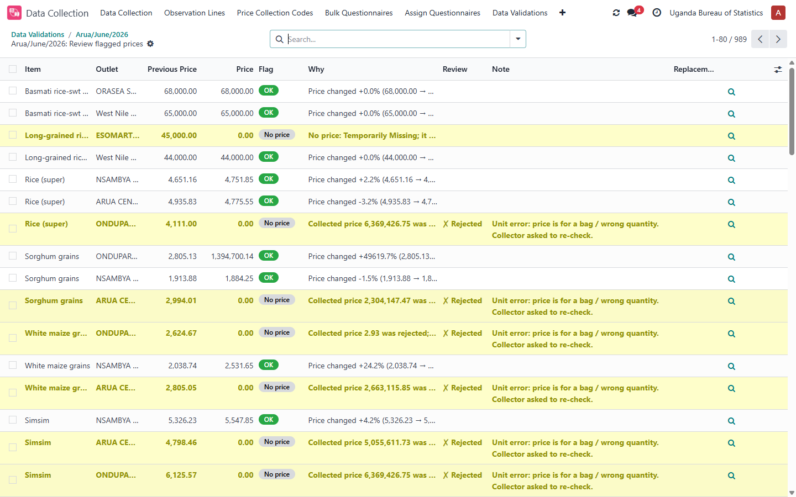
When nothing needs a decision, press Next: review inliers.
Step 7 · Review inliers (step 3 of 4)
Inliers are prices that did not change for 12 months in a row. Check they were really collected (not copied from last month). Accept or reject them the same way. An accepted inlier is not flagged again for 6 months.
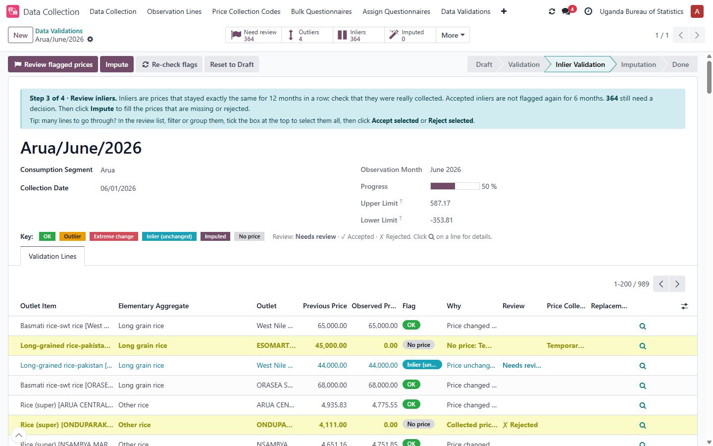
Then press Impute missing prices.
Step 8 · Impute (step 4 of 4)
Impute missing prices first shows a preview: how many prices are missing and why (temporarily missing, permanently missing, not collected). Confirm to fill them in.
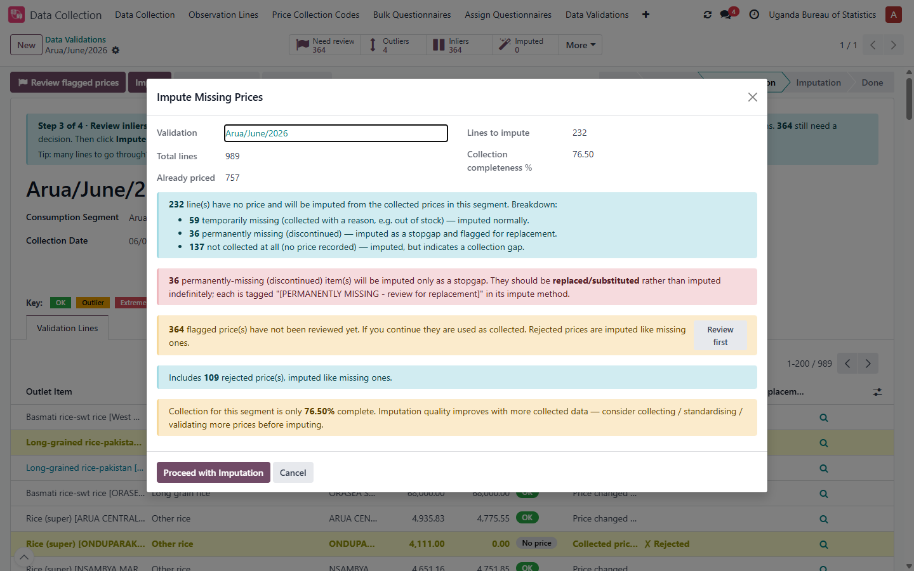
Each missing or rejected price is estimated from the price change of, in order: the same item in other outlets → the same elementary aggregate → micro class → sub class → … → another centre. The Why column says which one was used.
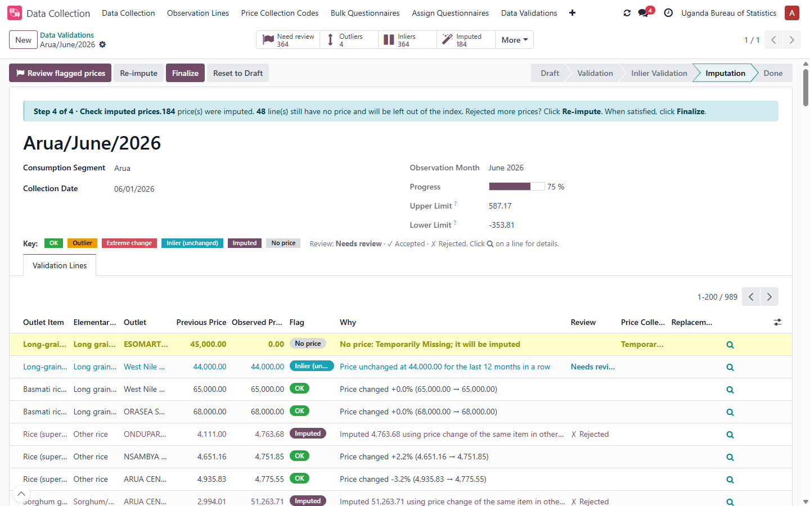
- A few lines may stay without a price (no similar item had prices). The banner says how many; they are left out of the index.
- Rejected more prices after imputing? Press Re-impute.
- A permanently missing (P) item should be replaced: a To replace button appears on the validation; see Replacements in the change note.
Step 9 · Finalize · Imputation → Done
Press Finalize when you are satisfied. The validation is closed.
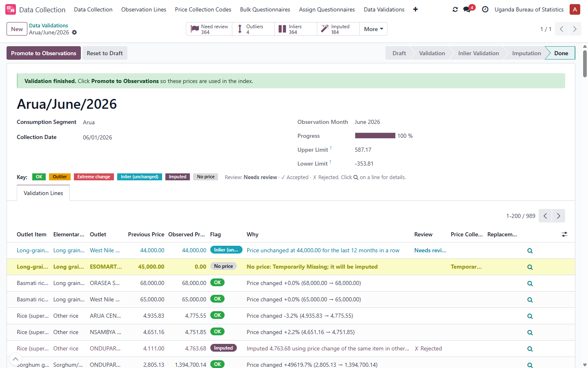
Step 10 · Promote to Observations
Press Promote to Observations. This copies the validated (and imputed) prices into the price history the index is computed from. The screen lists every price: New (no price on file for this month yet) or Conflict (a price is already on file, e.g. from an upload). Conflicts default to Use Validated; switch a row to Keep Existing to leave that one untouched. Then Promote.
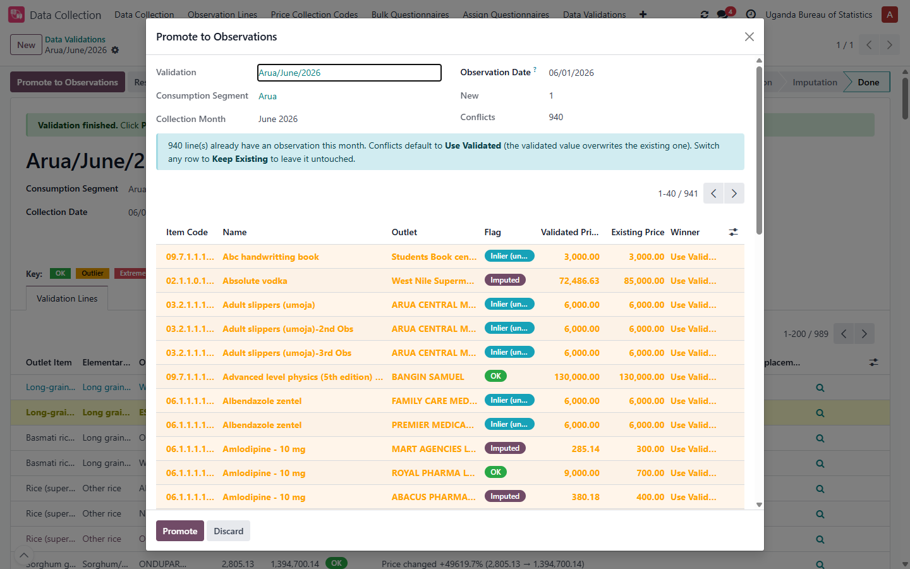
Imputed prices stay marked as imputed in the history and in the Excel export.
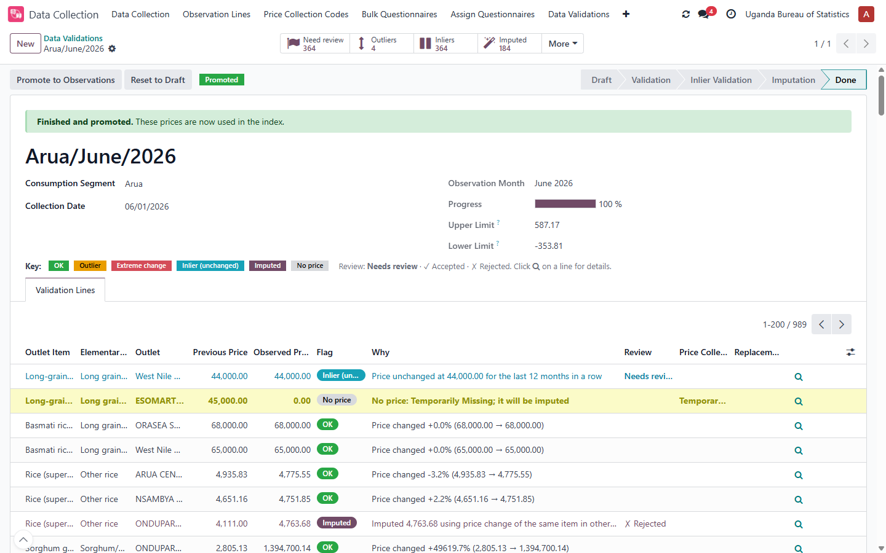
Wrong price found after promotion? Change it in Outlets → Price Data (it is then no longer marked imputed), or Reset to Draft the validation, fix it, and go through the steps and Promote again (conflicts → Use Validated). Then recompute the index (step 11).
Part 3 · The index
Step 11 · Compute the index (statistician)
Indices → Computations, in this order, each with New → Start Update:
- Update EA Indices
- Update Basket COICOP Indices
- Update Basket Indices
- Update National Indices
Each waits for the previous one; if one is still running, the system says so and offers Release running job & retry when a job is stuck.
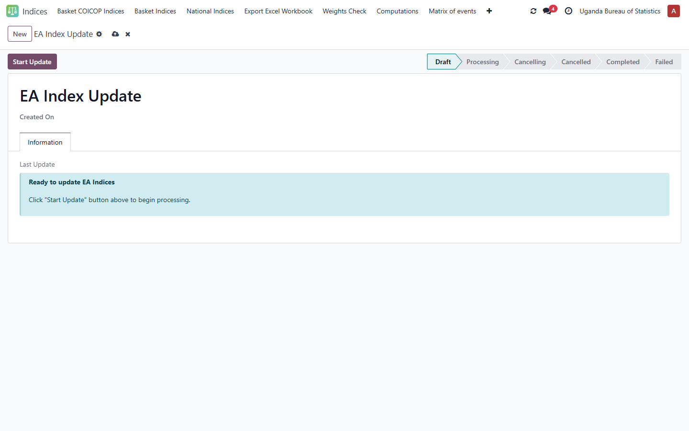
Step 12 · Check the result
- Operations dashboard: how far the month has got (issued → submitted → validated → promoted → in the index), per centre, and what is still missing.
- CPI dashboard: annual and monthly inflation, what drove it, divisions, movers.
- Price Review Reports (Data Collection menu): outliers & inliers, imputed and rejected prices, across validations.
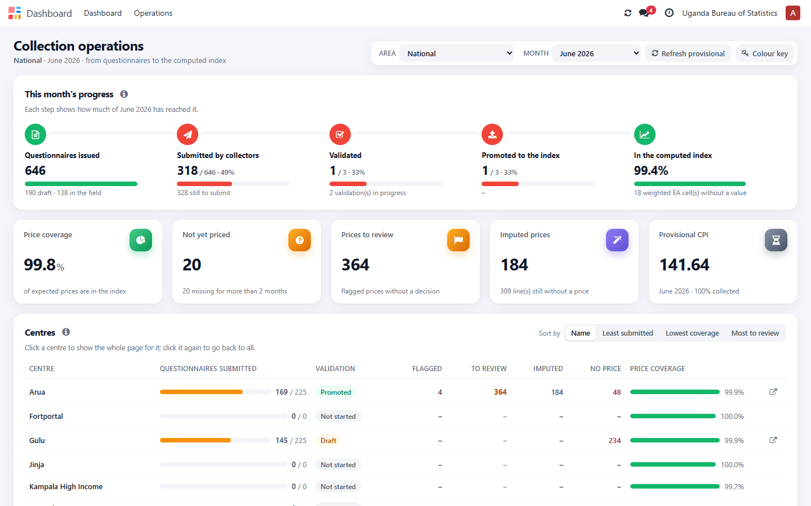
Quick reference: which button, when
| Where you are | Status | Press | Who |
|---|---|---|---|
| Questionnaire | Draft | Approve (list: Approve selected), or Cancel | Supervisor |
| Questionnaire | Price Survey | enter prices, then Submit for checking | Collector |
| Questionnaire | Standardization | Check prices → Send ticked prices back or All good: send to validation (list: Send selected to validation) | Supervisor |
| Questionnaire | Validation | (Take back from validation, only while its validation is in Draft) | Supervisor |
| Validation | Draft | Run checks | Statistician |
| Validation | Validation | ✓ / ✗ on each flagged price (or Review flagged prices, select, Accept / Reject selected) → Next: review inliers | Statistician |
| Validation | Inlier Validation | ✓ / ✗ on inliers → Impute missing prices | Statistician |
| Validation | Imputation | (Re-impute) → Finalize | Statistician |
| Validation | Done | Promote to Observations → Promote | Statistician |
| Indices → Computations | – | EA → Basket COICOP → Basket → National, each Start Update | Statistician |
What I noticed while writing this (worth deciding)
- Fixed: the outlier limits could be blown open by the errors themselves. The
limits are computed from the month's own price changes; in Arua June 2026 the unit
errors pushed the upper limit to 587× the previous price, so a sorghum price
going from 2,805 to 1,394,700 was flagged OK. Now any price more than 5× (or
under ⅕) of last month's is always an extreme change, with the reason "probably
a unit or typing error", and is kept out of the limit calculation. On Arua the limits
became 0.39–1.91 and no impossible price passes; on Gulu the number of flags stayed
about the same. The 5 is a setting (
hcpi_data_collection.sanity_ratio; 0 = off). - Done: rejecting a questionnaire was roundabout (a list, reasons typed per line, then a hidden Actions → Reject Observations, and the reasons never reached the collector's phone). Now: Check prices (step 4). Original note: Reject opens a list, you type reasons per line, then use the hidden Actions → Reject Observations. A simple dialog ("reason" + pick the lines) would be clearer. (A reject dialog exists in the code but nothing opens it.)
- Done: two different "Validate" buttons. Renamed Send to validation and Run checks; also Submit for checking, Next: review inliers, Impute missing prices. Original note: Validate Prices (questionnaire: send to validation) and Validate (validation: run the checks) sound the same. Suggested names: Send to validation and Run checks.
- Inlier decisions are many. Arua had 364 inliers to decide on in one month. The bulk Accept selected handles it, but a rule (e.g. accept automatically when the collector confirmed "unchanged") could reduce the work.
- The index computations are four separate screens to run in order. A single
Compute index for
button that runs the four in sequence would avoid mistakes.
Tell me which of these to change.